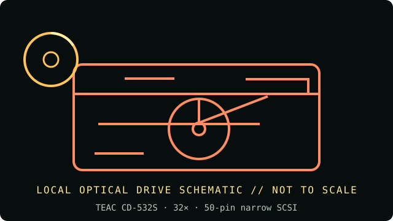

[ INDIVIDUAL COMPONENT // OPTICAL DRIVES ]
TEAC CD-532S
Internal 32× TEAC CD-ROM reader in the SCSI CD-532S model line. Rated speed is a manufacturer class maximum, not a guaranteed sustained transfer rate. Verify the exact label and revision before acquisition or installation.

IDENTIFICATION: TEAC CD-532S · confirm the complete unit label, suffix/OEM number and revision; this reader-only record does not claim writing capability.
Documented specifications
| Catalog subcategory | CD-ROM readers |
|---|---|
| Exact product identifier | TEAC CD-532S |
| Era / product type | late-1990s internal CD-ROM reader |
| Media / read and write support | CD-XA, CD-DA, CD-R, CD-RW, CD-I, CD-ROM Modes 1 and 2, Photo CD, Video CD and CD-Plus read; no writing. |
| Rated read speed | 32× maximum CD-ROM read; peak rating, not a guaranteed sustained rate. No recording is supported. |
| Interface / mechanics | 50-pin narrow SCSI (SCSI-1 class; confirm the bus and termination on the exact unit); internal 5.25-inch drive, with exact dimensions and bezel to be checked on the unit. |
| Host compatibility | Requires a compatible narrow-SCSI host adapter; set a unique SCSI ID and terminate only at the physical bus ends. Confirm the host bus and interface from the exact label/manual; PATA/ATAPI cabling does not apply. |
| Model distinction | The CD-532S is a SCSI reader with selectable 2×/4×/8×/32× read modes; it is not the IDE/ATAPI CD-552E. |
Media and preservation notes
A CD-ROM reader is not a CD writer. Optical-disc condition, reflectivity, errors, firmware and host software all affect practical readability; a speed label alone cannot establish a successful preservation read.
- Inspect the disc for cracks, delamination or contamination before spinning; handle only by its edge or center hole.
- Record the exact model and firmware, host/controller, software, media type, retries and read/verification errors; retain a checksum-verified image and acquisition log.
- Store source media in protective cases in a clean, cool, dry and dark environment. Preserve an unmodified original and use verified copies for access.
Installation and compatibility checks
- Requires a matching SCSI host adapter and a unique bus ID; terminate only at the bus ends. Confirm the precise SCSI variant before connection because suffix-specific interface details matter.
- CD-532S is not the IDE CD-552E and should not inherit the latter model’s interface or specifications.
- Compare the drive label and manual revision before applying speed, media or jumper claims; OEM variants may differ even when the front bezel is similar.
Documentation, standards and preservation references
- TEAC CD-532S optical-drive cardModel-specific interface, supported media, read modes and SCSI settings.
- TEAC CD-532S 32× SCSI reader listingExact-model reference for the internal SCSI reader identity and rated speed.
- Ecma International — ECMA-130 CD-ROM standardCD-ROM physical format reference; it does not certify a drive revision or guarantee every media read.
- NIST — Care and handling of CDs and DVDsOptical-media preservation guidance; not a drive-specific specification.
Model-specific formats and interface notes are based on the references listed above. Match those references to the complete unit label and revision; listed support does not guarantee a successful read from every aged or recordable disc.